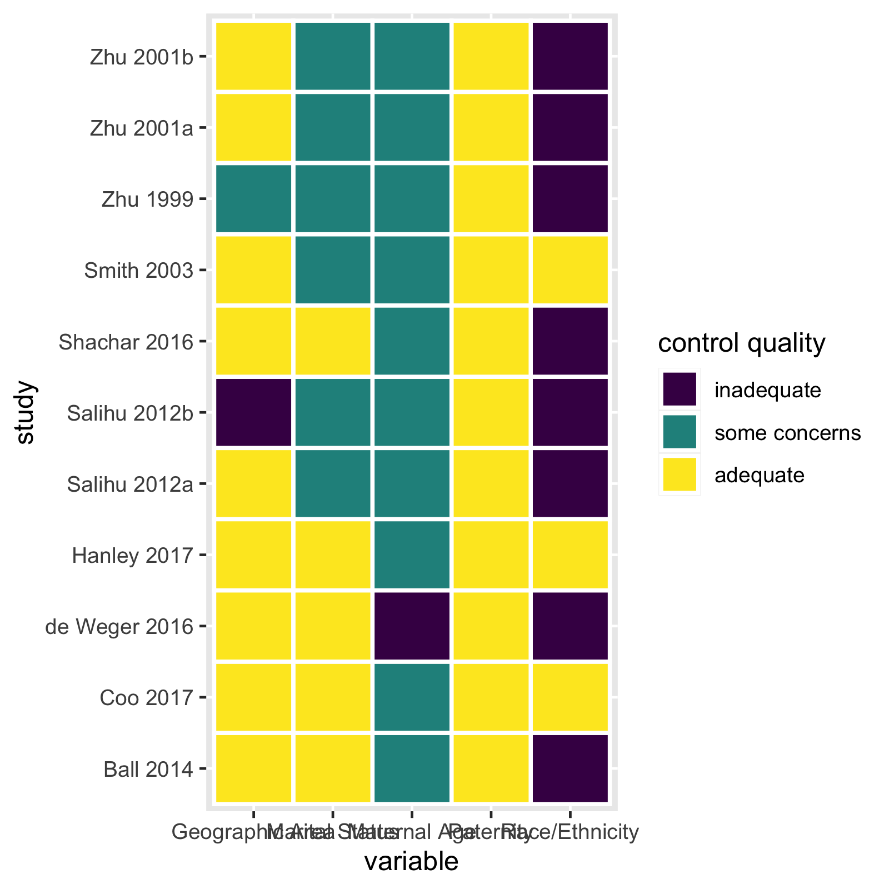
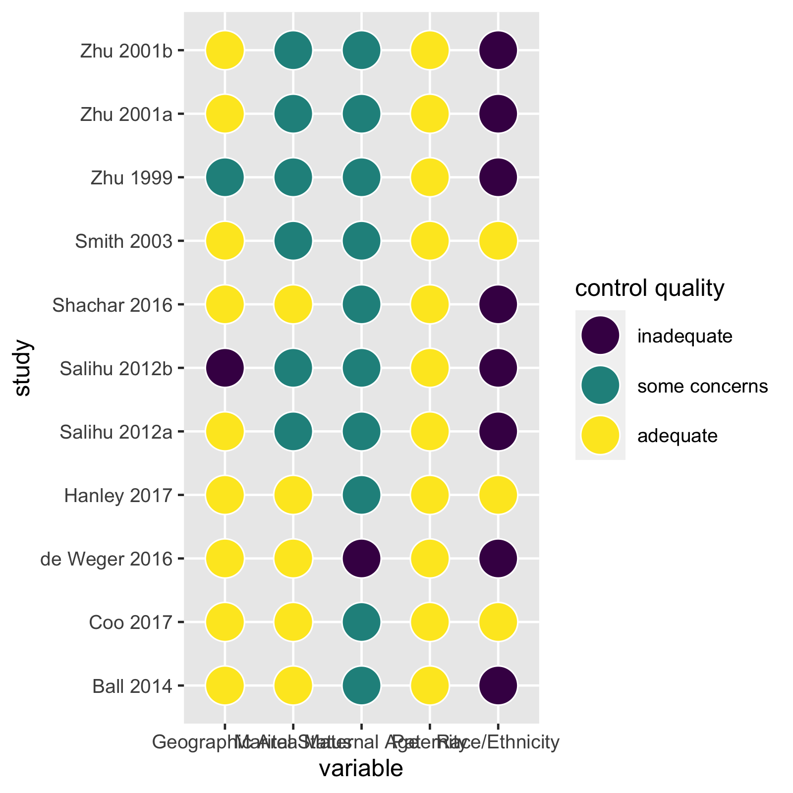
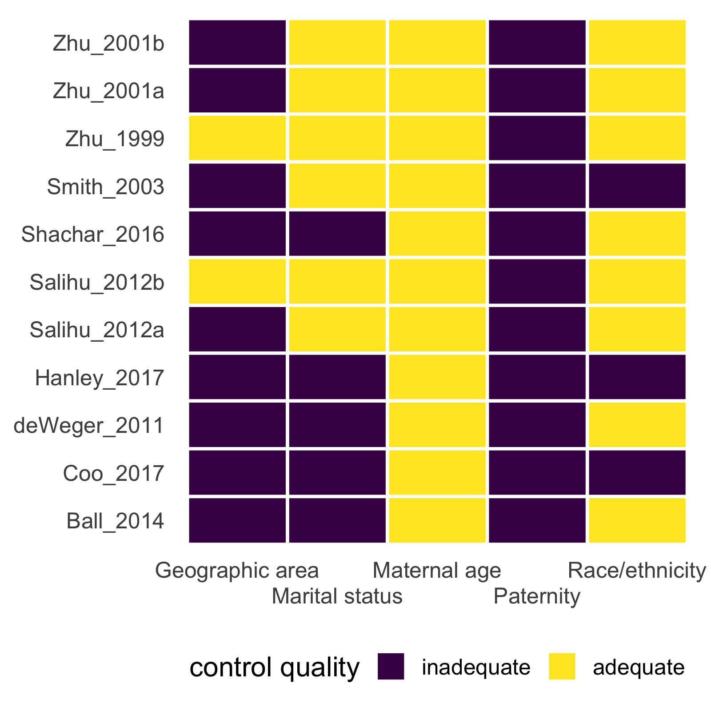

The goal of metaconfoundr is to make it easy to visualize confounding control in meta-analyses. Researchers use a causal diagram to assess factors that are required to control for to estimate an effect unbiased by confounding. Then, the researchers create a data frame of confounding variables and how well each study in the meta-analysis controlled for each: adequately, inadequately, or with some control. See the vignette on collecting confounder data for more information.
In addition to the package, metaconfoundr ships with a Shiny app to help create visualizations. You can start the app locally with launch_metaconfoundr_app() or use the hosted version.
Installation
metaconfoundr is not yet on CRAN, but you can install the development version of metaconfoundr from GitHub with:
# if needed # install.packages("remotes") remotes::install_github("malcolmbarrett/metaconfoundr")
Visualizing confounding control
metaconfoundr includes an example dataset, ipi, that contains information on a meta-analysis of interpregnancy interval and the risk of preterm birth. Use metaconfoundr() to prepare the dataset to work with metaconfoundr functions. ipi includes several domains of confounders, but for ease of visualization, we’ll just show one, Sociodemographics.
library(metaconfoundr) mc_ipi <- metaconfoundr(ipi) %>% dplyr::filter(construct == "Sociodemographics") mc_ipi #> # A tibble: 55 x 5 #> construct variable is_confounder study control_quality #> <chr> <chr> <chr> <chr> <ord> #> 1 Sociodemographics Maternal Age Y Zhu 2001a some concerns #> 2 Sociodemographics Maternal Age Y Zhu 2001b some concerns #> 3 Sociodemographics Maternal Age Y Zhu 1999 some concerns #> 4 Sociodemographics Maternal Age Y Salihu 2012a some concerns #> 5 Sociodemographics Maternal Age Y Salihu 2012b some concerns #> 6 Sociodemographics Maternal Age Y Smith 2003 some concerns #> 7 Sociodemographics Maternal Age Y Shachar 2016 some concerns #> 8 Sociodemographics Maternal Age Y Ball 2014 some concerns #> 9 Sociodemographics Maternal Age Y Coo 2017 some concerns #> 10 Sociodemographics Maternal Age Y Hanley 2017 some concerns #> # … with 45 more rows
metaconfoundr includes several tools for visualizing the results of a confounding control assesment. The most common are mc_heatmap() and mc_trafficlight()
mc_heatmap(mc_ipi)

mc_trafficlight(mc_ipi)

These plotting functions return ggplots, so they are easy to modify
mc_heatmap(mc_ipi) + theme_mc() + ggplot2::guides(x = ggplot2::guide_axis(n.dodge = 2))

metaconfoundr also includes geoms and scales to make output similar to other types of bias assessments for meta-analyses
mc_trafficlight(mc_ipi) + theme_mc() + geom_cochrane() + scale_fill_cochrane() + ggplot2::guides(x = ggplot2::guide_axis(n.dodge = 2))

Similar work
For working with common assessments of bias in studies, such as the ROBINS tool, see the excellent robvis package.
Code of Conduct
Please note that the ‘metaconfoundr’ project is released with a Contributor Code of Conduct. By contributing to this project, you agree to abide by its terms.